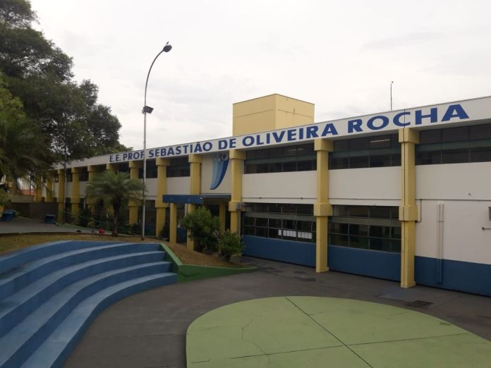

Atividades de Robótica do Buffa semana 19 a 24 de agosto
(7º Ano - SEDUC-SP)

A escola Sebastião de Oliveira Rocha

O professor Ricardo Buffa Verçosa - esperando você caprichar na atividade
1. Alerta Visual de Trânsito (Substituto do Semáforo com Cores)
Conceitos: Sequência, tempo, lógica condicional simples
Objetivo: Criar uma simulação de alerta visual que troca entre 3 padrões de LED, representando "Pare", "Atenção" e "Siga".
- Exploração: Por que o trânsito usa sinais diferentes?
- Planejamento: Desenho dos padrões no papel.
Passo a Passo:
- Ao iniciar: mostrar ícone de coração.
- Para sempre:
- Mostrar LEDs "X" (Pare), pausar 1000 ms
- Mostrar LEDs "!" (Atenção), pausar 1000 ms
- Mostrar LEDs "OK" (Siga), pausar 1000 ms
Desafio Extra: Botão A ativa piscar sinal de alerta (!)
2. Dado Eletrônico com Rostinhos
Conceitos: Eventos, variáveis, aleatoriedade, lógica condicional
Objetivo: Criar uma variável humor que sorteia de 1 a 6 e mostra uma carinha conforme o número.
- Ao agitar:
- Criar variável humor
- Definir humor como número aleatório de 1 a 6
- Mostrar número e rosto correspondente:
- Mostrar número (humor)
- Se humor = 1: carinha triste, 2: dois pontos, ..., 6: carinha feliz
Desafio Extra: Adicionar som ao sortear.
3. Termômetro com Ícones
Conceitos: Sensores, variáveis, condicionais, feedback visual
Objetivo: Mostrar temperatura com ícones diferentes.
- Ao iniciar: mostrar temperatura com mostrar número
- Para sempre:
- Se temperatura > 30: mostrar bravo
- Se temperatura < 15: mostrar triste
- Senão: mostrar feliz
Desafio Extra: Botão A: mostra temperatura | Botão B: mostra ícone atual
4. Bússola Digital (Direção Norte)
Conceitos: Sensores, leitura de valores, lógica condicional, orientação
Objetivo: Mostrar direção com ícones.
- Ao iniciar: mostrar "Calibrar"
- Para sempre:
- Criar variável graus = bússola (graus)
- Se graus entre 340-20: mostrar seta para cima ou "N"
- Se 70-110: mostrar seta para direita ou "L"
- Se 160-200: mostrar seta para baixo ou "S"
- Se 250-290: mostrar seta para esquerda ou "O"
Desafio Extra: Mostrar letra da direção com "mostrar string N"